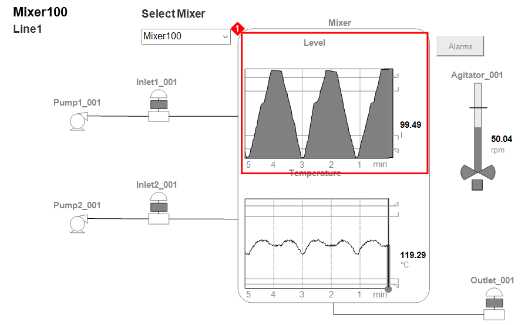
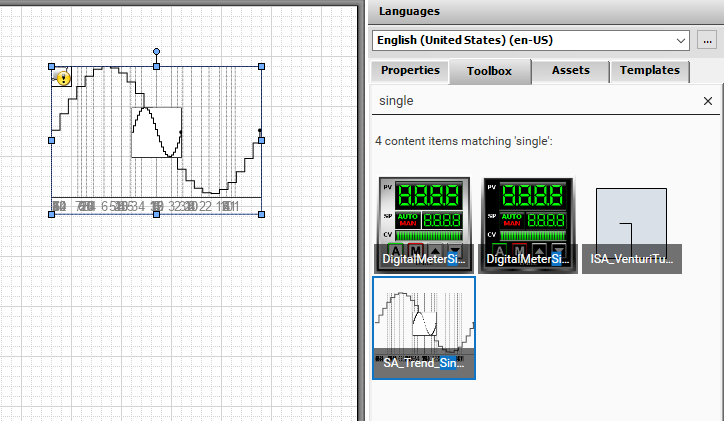
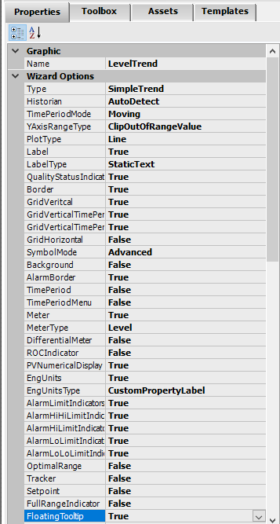
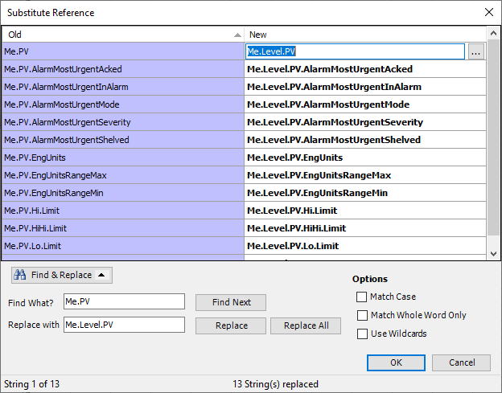
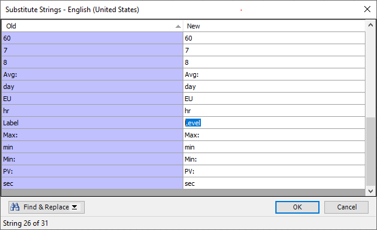
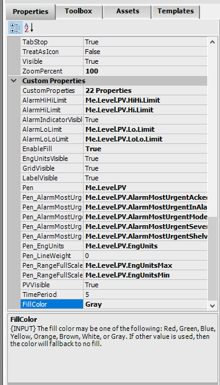
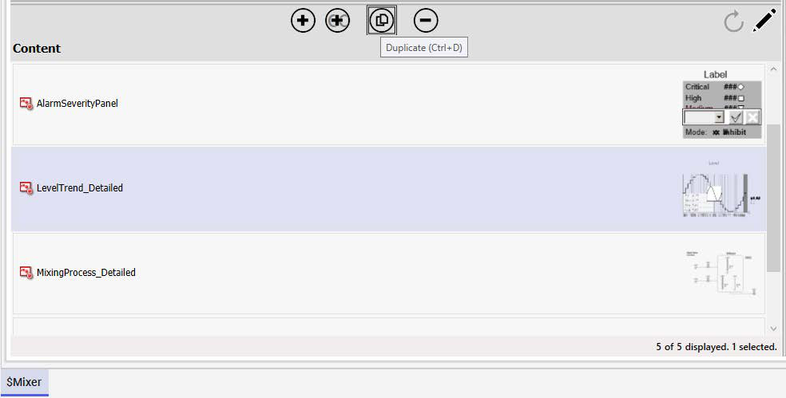
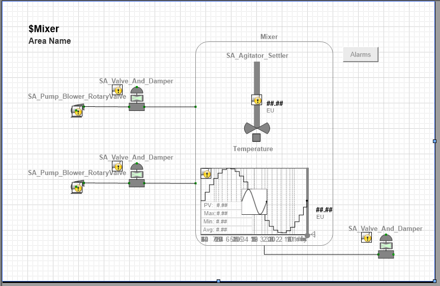
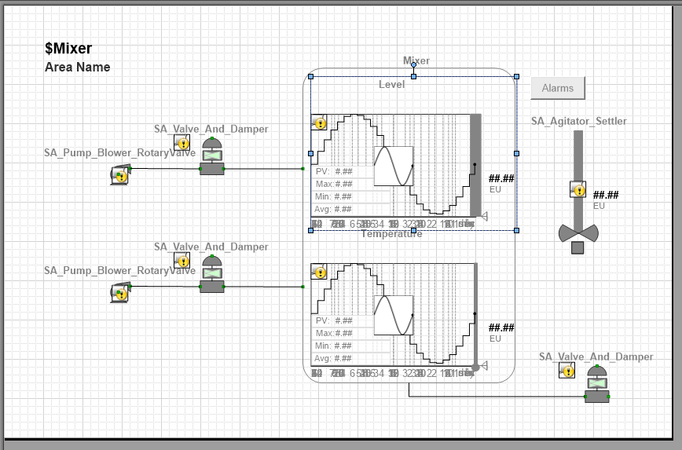

Substitute Strings: "Level" replaced with "Temperature" across the entire symbol (page 394)
Source: AVEVA InTouch for System Platform 2023 Training Manual, Module 6, Lab 17 (pages 387–400)
In this lab you will create and configure SA_Trend_SinglePen symbols for Level and Temperature, embed them into the mixing process graphic, and test them at runtime.
Reference: Module 6, Lab 17 (pages 387–388)
In this lab you will add trend charts directly into the mixer HMI graphic so operators can see how Level and Temperature change over time. The SA_Trend_SinglePen symbol from the Situational Awareness Library provides a ready-made chart with built-in metrics (PV, Max, Min, Avg), alarm border indicators, and a floating tooltip — all of which you will configure step by step.

Reference: Module 6, Lab 17 (pages 388–392)
Begin by opening the $Mixer template for editing. In Content, create a new symbol named LevelTrend_Detailed and open it. From the Toolbox tab, search for single and drag SA_Trend_SinglePen (from the Situational Awareness Library) onto the canvas.

With the symbol selected, configure the wizard options on the Properties tab:
| Property | Value |
|---|---|
| Name | LevelTrend |
| YAxisRangeType | ClipOutOfRangeValue |
| PlotType | Line |
| Label | True |
| SymbolMode | Advanced |
| AlarmBorder | True |
| Meter | True |
| MeterType | Level |
| EngUnitsType | CustomPropertyLabel |
| FloatingTooltip | True |
| AlarmHiHiLimitIndicator | True |
| AlarmHiLimitIndicator | True |
| AlarmLoLimitIndicator | True |
| AlarmLoLoLimitIndicator | True |

Next, use Substitute References to redirect all generic Me.PV references to the Level attribute. Right-click LevelTrend, select Substitute > Substitute References, and replace Me.PV with Me.Level.PV. Then manually update Me.Level.PV.EngUnitsRangeMax to Me.Level.PV.EngUnitsMax and the corresponding Min field.

Use Substitute Strings to change the display label from "Label" to "Level".

Finally, set the custom properties EnableFill to True and FillColor to Gray. The gray filled area under the trend line represents the volumetric flow in the mixing process.

Reference: Module 6, Lab 17 (pages 393–395)
With the Level trend complete, duplicate LevelTrend_Detailed to create TemperatureTrend_Detailed. Open the duplicate for editing and make the following changes:
| Property | Value |
|---|---|
| Name | TemperatureTrend |
| MeterType | Temperature |
| EnableFill | False |

Use Substitute Strings to change "Level" to "Temperature" throughout, then use Substitute References to change Me.Level.PV references to Me.Temperature.PV.
Reference: Module 6, Lab 17 (pages 395–397)
Open MixingProcess_Detailed for editing. Delete the old Level and Temperature meter objects from the canvas — they are no longer needed now that trend charts will replace them. From Relative References, embed Me.TemperatureTrend_Detailed in the bottom half of the tank and Me.LevelTrend_Detailed in the top half. Move the agitator graphic to the right of the mixer tank to make room, then resize the tank to fit both trends.


1. What wizard option controls whether the SA_Trend_SinglePen shows alarm limit indicators on its meter display?
Set AlarmHiHiLimitIndicator, AlarmHiLimitIndicator, AlarmLoLimitIndicator, and AlarmLoLoLimitIndicator to True. The Meter property must also be True to show the meter at all.
2. Why do you use Substitute References to change Me.PV to Me.Level.PV instead of manually editing each reference?
The SA_Trend_SinglePen contains many internal references to Me.PV. Substitute References performs a bulk find-and-replace across all 13 references at once, saving time and eliminating errors.
3. What is the purpose of the EnableFill and FillColor custom properties on the Level trend?
EnableFill=True with FillColor=Gray creates a shaded fill area under the trend line. In this lab, the gray fill represents a volumetric flow measured in liters per second.
4. How do you reuse the Level trend to create the Temperature trend?
Duplicate LevelTrend_Detailed, then use Substitute Strings to change "Level" to "Temperature" and Substitute References to change Me.Level.PV to Me.Temperature.PV. Also update MeterType to Temperature and set EnableFill to False.
Module 6 — Trend Visualization. AVEVA InTouch for System Platform 2023 Training.
Next: Lesson 32 — Multi Pens Trend